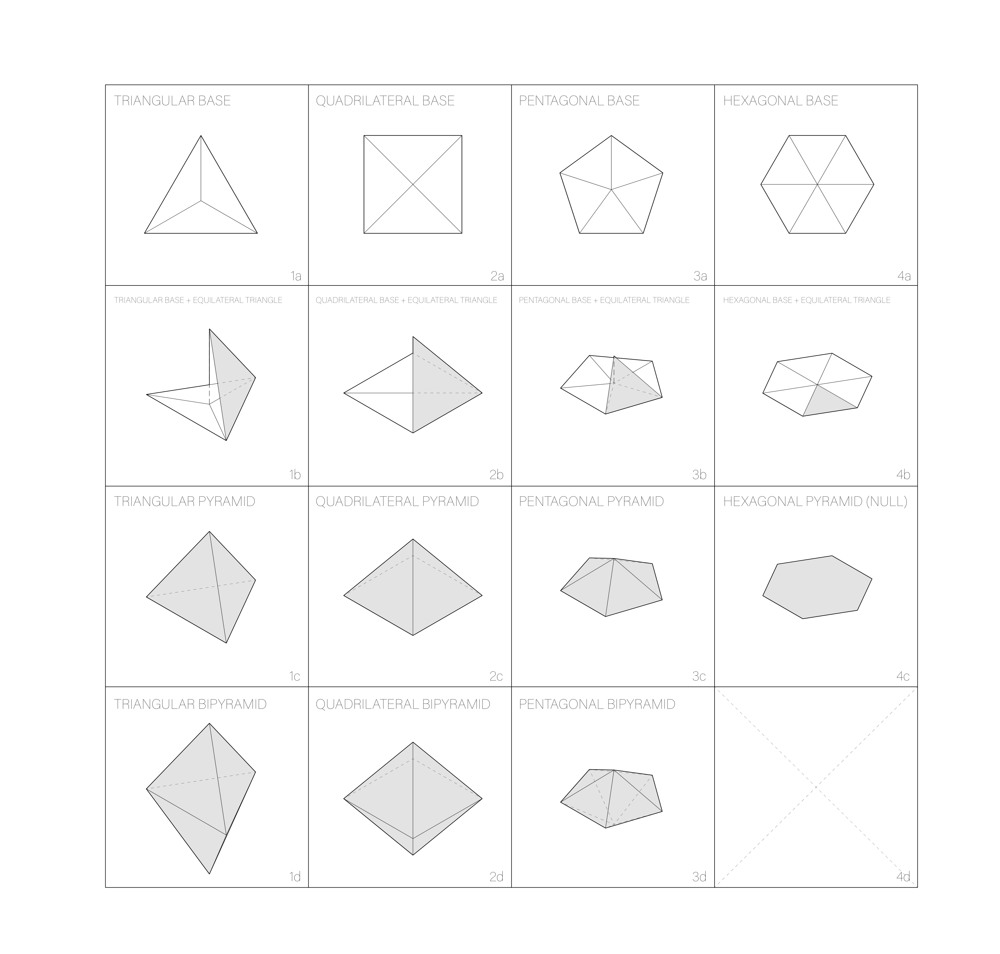
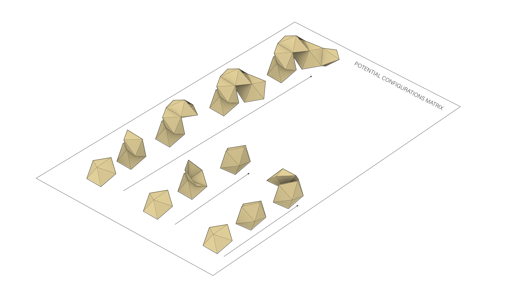
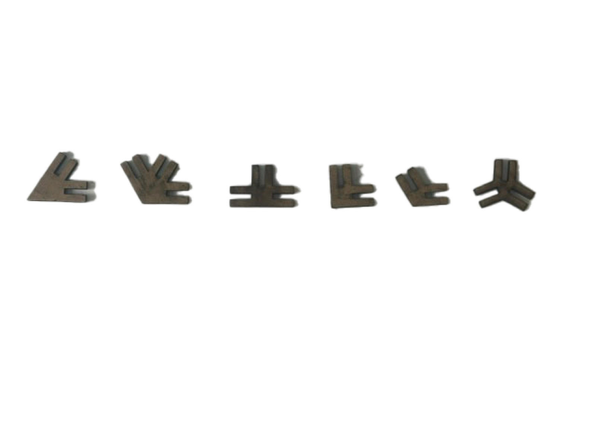
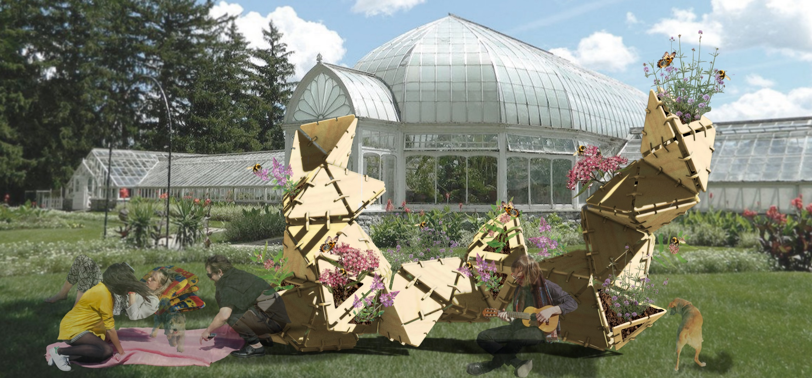
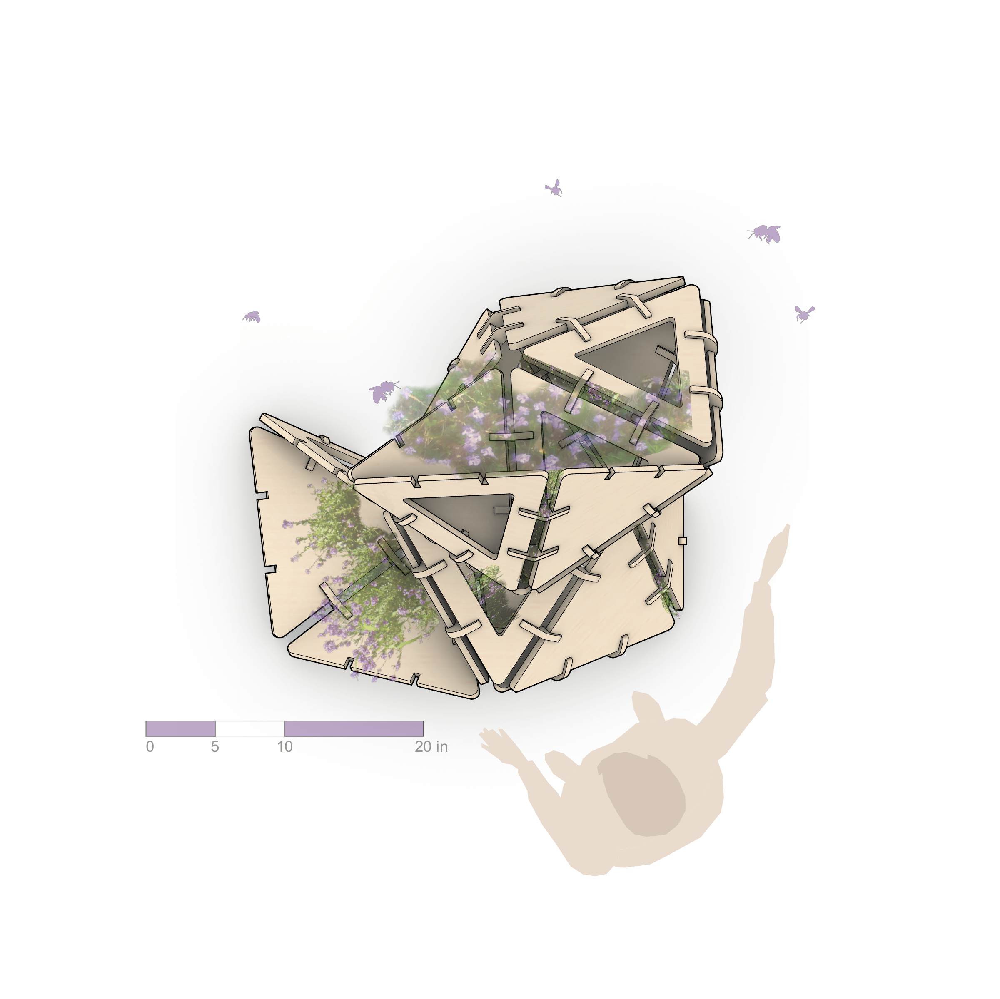
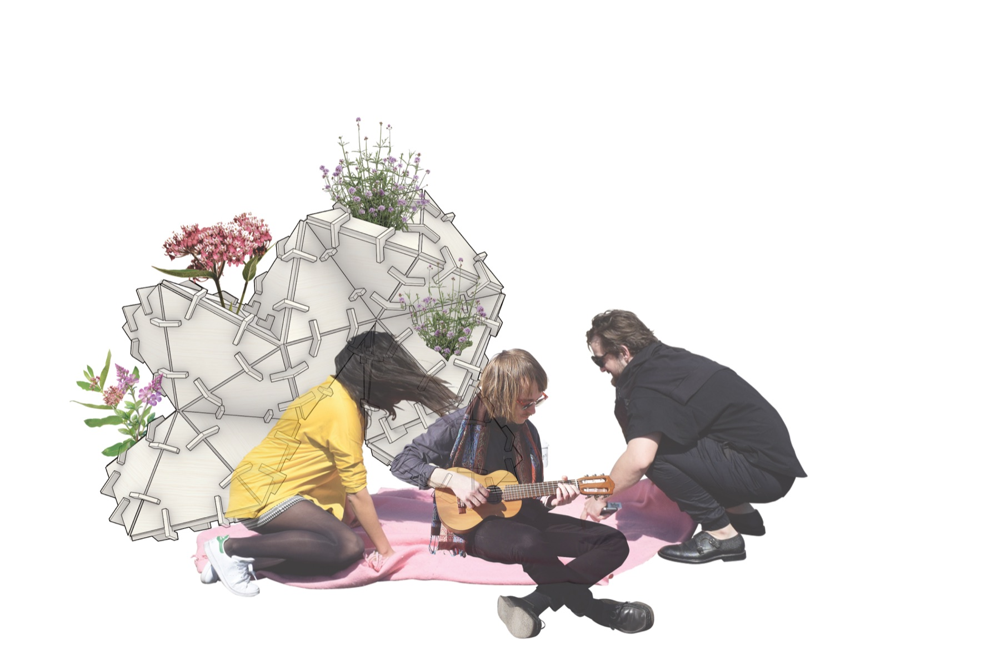

From 2D elements to 3D space
Pollen farm is a curious but morphic name for the piece of furniture. Throughout the project, our question has always been: How can we use a simple set of transformative rules to duplicate and perform 2D geometric shapes into usable space for farming? In the end, our answer is composed only of flat pieces of CNC-routed plywood boards, solely depending on the different angles and connectors to form delicate, complicated, and ultimately usable rooms.
01 / The Prototypes
From pollen to a room
Like its name, the module of the piece of furniture’s inspiration comes from the microscopic structure in plant pollen. One of them is Stellaria holostea, whose pollen is roughly dodecahedral, which means the object is composed of 12 regular pentagons. Finding its structure interesting, we decided to utilize the shape of it to generate the room of a single module.
However, after our experiments with pentagon structures, we realized that geometric shapes with fewer edges work even better. For example, a pentagonal bipyramid is composed of 10 triangular facets, and is far more flexible in the sense of creating space. Using different angles and connecting methods, we are able to fold and develop the shape towards different directions, thus having the structure organically grow into a natural but cohesive cluster of rooms.


02 / The Rule
One form, many directionsNow we know that the prototype would be a pentagonal bipyramid. Its five-sided logic still recalled the pollen reference, while its triangular facets gave us different directions in which to repeat it. We mirrored one module along an edge and folded the copy over that edge. Repeating this simple operation allowed the rooms to grow upward, outward, or around one another without losing their shared geometry.



03/ The Gaps
The angles become jointsThe pentagonal bipyramid gives us two different dihedral angles, which we translated into two basic gap conditions. The A joint connects five triangular pieces into a pentagon, while the B joint connects the two halves of the bipyramid. As the structure extends beyond one module, these joints also become AA, BB, and AB, allowing the same pieces to meet at different angles.
After the paper concept prototypes of the connected structures, we decided to introduce a connective method inspired by building flakes. By cutting slots at different positions and angles of the shape, connecting them through joints of specific angles, we are able to turn laser-cutted materials with thickness into the same shape as the concept prototypes.



04/ The Concept
The cluster at human scaleAfter deciding how the units connect, we arranged the cluster as a piece of furniture for farming. In plan, the openings turn toward different directions; the front and side elevations reveal how the rooms rise and lean across the structure. In the renderings, plants and people suggest how these spaces could be used.

One cluster, four views.
Choose a view to read its openings and changing height.


05/ The Fabrication
Flat pieces, full scaleTo make the final piece, we translated the triangular faces and connectors back into flat outlines for CNC routing. We cut them from plywood boards and assembled the parts through the same slotting logic tested in chipboard. At full scale on campus, their angles began to define rooms between the panels, making the passage from 2D elements to 3D space tangible.